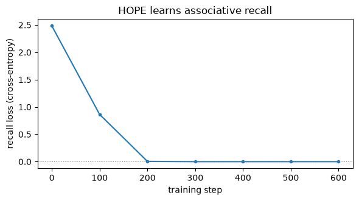

A companion to NL-3, built to answer one question: §5 assembled a HOPE block but only ran it forward — does the thing actually learn? This trains one end to end on a real task, small enough for a laptop CPU. Optional: read it when NL-3 §5 points here.
Runs on CPU in seconds under OMP_NUM_THREADS=1, minutes without it — the tensors here are small enough that torch’s intra-op parallelism costs far more than it saves; see the course front page’s runtime note. Pure PyTorch, no GPU.
The task: associative recall. The model sees a list of key→value pairs, then a query key, and must output the matching value:
k₃ v₇ k₁ v₂ k₅ v₉ k₂ v₄ k₅ → v₉
└────── pairs to store ──────┘ query recall
This isolates exactly what HOPE is built for: write associations into an in-context memory, then read one back. A model with no memory cannot do it; HOPE should learn it to ~100% and even generalize to longer lists than it trained on.
It is the synthetic probe (MQAR) behind the in-context recall suite the paper reports in §9.4 — and a laptop-scale cousin of the needle-in-a-haystack tasks of §9.2, which are a different benchmark family (RULER) built on the same instinct.
Reuses every piece of the course: the in-context store (M1), projections (M2), the delta/gated write (M4, NL-1), in-context \(\eta,\alpha\) and the self-generated target (NL-3 §2), the DGD-flavored write (M6), a persistent feed-forward block (the \(k\)=1 single-frequency CMS — see the continuum-memory aside for the real multi-frequency version), and — crucially — the outer recall loss as the anchor that keeps the self-generated target from collapsing (NL-3 §3). Plus a local convolution (NL §8.3).
1. The task — associative recall
Keys and values are tokens from two disjoint id ranges. A sequence interleaves \(N\) pairs, then appends one of the keys as the query; the label is that key’s value.
import numpy as npimport torchimport torch.nn as nnimport torch.nn.functional as Ftorch.manual_seed(0)NK, NV =8, 12# key-vocab and value-vocab sizesVOCAB = NK + NV # ids: keys in [0,NK), values in [NK, NK+NV)def make_batch(B, N, gen): seqs, tgts = [], []for _ inrange(B): keys = torch.randperm(NK, generator=gen)[:N] # N distinct keys vals = torch.randint(0, NV, (N,), generator=gen) qi = torch.randint(0, N, (1,), generator=gen).item() # which pair is queried s = []for i inrange(N): s += [keys[i].item(), NK + vals[i].item()] # key token, then value token s += [keys[qi].item()] # final token = query key seqs.append(s) tgts.append(vals[qi].item())return torch.tensor(seqs), torch.tensor(tgts)# show one example, decodedseq, tgt = make_batch(1, 4, torch.Generator().manual_seed(2))decode =lambda t: f"k{t}"if t < NK elsef"v{t - NK}"print("sequence:", " ".join(decode(t.item()) for t in seq[0]))print("query is the last token; correct answer:", f"v{tgt.item()}")print(f"chance accuracy = 1/NV = {1/ NV:.3f}")
sequence: k0 v7 k4 v8 k7 v3 k2 v6 k4
query is the last token; correct answer: v8
chance accuracy = 1/NV = 0.083
2. The model — a trainable HOPE block
This is NL-3 §5’s block, made trainable and given the two things a real recall model needs: a local causal convolution (§8.3 uses a window of 4) so a value position can “see” the key just before it — without this the per-token memory only ever binds a token to itself and can’t link key→value across positions — and an outer cross-entropy loss on the recalled value, which trains all the slow weights and anchors the self-generated target (NL-3 §3).
class HopeRecall(nn.Module):def__init__(self, d=48, memory=True):super().__init__()self.d = dself.memory = memoryself.emb = nn.Embedding(VOCAB, d)self.conv = nn.Conv1d(d, d, 4, groups=d, padding=3) # depthwise causal, window 4 (HOPE §8.3)self.Wk, self.Wv, self.Wq = (nn.Linear(d, d, bias=False) for _ inrange(3)) # projections (M2)self.g_eta, self.g_alpha = nn.Linear(d, 1), nn.Linear(d, 1) # in-context η,α (NL-1/NL-3 §2)self.Mv = nn.Linear(d, d, bias=False) # self-generated target (NL-3 §2)self.cms = nn.Sequential(nn.Linear(d, d), nn.GELU(), nn.Linear(d, d)) # persistent FFN: the k=1 single-frequency CMS (= a plain MLP)self.head = nn.Linear(d, NV)def forward(self, seq): B, L = seq.shape d =self.d x =self.emb(seq) x = x +self.conv(x.transpose(1, 2))[:, :, :L].transpose(1, 2) # mix adjacent tokens M = torch.zeros(B, d, d) # fast in-context memory (M1) o = torch.zeros(B, d) for t inrange(L): xt = x[:, t] k, v, q =self.Wk(xt), self.Wv(xt), self.Wq(xt) k, q = F.normalize(k, dim=-1), F.normalize(q, dim=-1) # L2-normalize k,q (HOPE §8.3)ifnotself.memory: o =self.cms(q)continue# ablation: no in-context memory target =self.Mv(v) # self-generated target (anchored by outer loss) eta = torch.sigmoid(self.g_eta(xt)).unsqueeze(-1) # in-context learning rate alpha = torch.sigmoid(self.g_alpha(xt)).unsqueeze(-1) # in-context forget gate Mk = torch.bmm(M, k.unsqueeze(-1)).squeeze(-1) M = alpha * M - eta * torch.bmm((Mk - target).unsqueeze(-1), k.unsqueeze(1)) # gated delta write o = torch.bmm(M, q.unsqueeze(-1)).squeeze(-1) # read with the query keyreturnself.head(self.cms(o))print("HopeRecall defined — every line traces to a module (see the comments).")
HopeRecall defined — every line traces to a module (see the comments).
3. Train it
Plain supervised training: cross-entropy on the recalled value, Adam on all parameters. The outer loop trains the slow weights (projections, gates, \(\mathcal M_v\), the feed-forward block, head); the fast memory \(M\) is written in-context inside each forward pass and reset per sequence. (A couple of minutes on CPU.)
def train(memory, steps, N=4, B=64, lr=3e-3, seed=1): torch.manual_seed(seed) gen = torch.Generator().manual_seed(seed) model = HopeRecall(memory=memory) opt = torch.optim.Adam(model.parameters(), lr=lr) curve = []for s inrange(steps): seq, tgt = make_batch(B, N, gen) loss = F.cross_entropy(model(seq), tgt) opt.zero_grad() loss.backward() opt.step()if s %100==0: curve.append((s, loss.item()))return model, curvehope_model, hope_curve = train(memory=True, steps=700)print("training done. loss every 100 steps:")for s, l in hope_curve:print(f" step {s:>4}: loss {l:.3f}")
training done. loss every 100 steps:
step 0: loss 2.484
step 100: loss 0.863
step 200: loss 0.005
step 300: loss 0.000
step 400: loss 0.000
step 500: loss 0.000
step 600: loss 0.000
4. Did it learn? — accuracy, the loss curve, and an ablation
def accuracy(model, N, n=512, seed=999):with torch.no_grad(): seq, tgt = make_batch(n, N, torch.Generator().manual_seed(seed))return (model(seq).argmax(-1) == tgt).float().mean().item()# ablation: same block with the in-context memory DISABLEDmem_off, _ = train(memory=False, steps=500)print(f"chance : {1/ NV:.3f}")print(f"HOPE (in-context memory) : {accuracy(hope_model, 4):.3f}")print(f"memory DISABLED (conv only) : {accuracy(mem_off, 4):.3f}")
import matplotlib.pyplot as pltsteps, losses =zip(*hope_curve)plt.figure(figsize=(6, 3.4))plt.plot(steps, losses, "-o", ms=3)plt.axhline(0, color="gray", lw=0.8, ls=":")plt.xlabel("training step")plt.ylabel("recall loss (cross-entropy)")plt.title("HOPE learns associative recall")plt.tight_layout()plt.show()

HOPE reaches ~100% recall (loss → 0); the memory-disabled ablation stalls far lower — the local conv lets it catch a query about the most recent pair (a recency shortcut), but only the in-context memory can recall an arbitrary earlier pair. The memory is doing the work the whole course built toward — and the outer recall loss is exactly the anchor of NL-3 §3: the self-generated target \(\hat{\mathbf v}=\mathcal M_v(\mathbf v)\) doesn’t collapse here because it is wrapped in a loss that scores real recall.
5. It generalizes to longer contexts than it trained on
The model trained on 4 pairs. A recurrent in-context memory should handle more pairs at test time without retraining — the same write rule just runs for more steps. This is the small-scale shadow of HOPE’s long-context result (holding recall far past the trained length).
print("trained on N=4 pairs; tested on longer sequences (no retraining):")for N in [4, 6, 8]:print(f" N={N} pairs (seq len {2*N+1}): recall acc {accuracy(hope_model, N):.3f}")
trained on N=4 pairs; tested on longer sequences (no retraining):
N=4 pairs (seq len 9): recall acc 1.000
N=6 pairs (seq len 13): recall acc 1.000
N=8 pairs (seq len 17): recall acc 1.000
6. Watch one recall happen
seq, tgt = make_batch(1, 4, torch.Generator().manual_seed(123))with torch.no_grad(): pred = hope_model(seq).argmax(-1).item()decode =lambda t: (f"k{t}"if t < NK elsef"v{t-NK}")print("sequence :", " ".join(decode(t.item()) for t in seq[0]))print(f"query key: {decode(seq[0,-1].item())}")print(f"HOPE says: v{pred} correct: v{tgt.item()}{'✓'if pred==tgt.item() else'✗'}")
HOPE trains end to end on a real task with ordinary backprop, and solves associative recall to ~100% — the in-context memory writes pair associations during the forward pass and reads the right one back at the query.
The pieces matter, concretely: disable the memory and recall collapses to a recency shortcut; the local conv is what lets a value position bind to the preceding key; L2-normalized keys keep the writes from crosstalking (the linear-algebra primer; M1’s capacity law).
The anchor is real: the self-generated target \(\hat{\mathbf v}=\mathcal M_v(\mathbf v)\) trains fine because the outer recall loss supervises it — no collapse, exactly as NL-3 §3 argued.
Recurrence generalizes: trained on 4 pairs, it recalls from longer lists unchanged — the laptop-scale shadow of HOPE’s long-context behavior.
Honest scope. This is a deliberately tiny instance: a single matrix memory (not a deep MLP memory), a single feed-forward block trained as an ordinary slow weight — the \(k\)=1 single-frequency CMS (a plain MLP), not the real multi-frequency continuum (built in the continuum-memory aside) — full BPTT over short sequences (not the chunk-wise parallel training HOPE uses at scale, §8.2), and a synthetic task. It demonstrates that the assembled block trains and works, and that each ingredient earns its place — not the paper’s full-scale results.
Things to tinker with: raise NK/N until recall degrades (you’ve hit the single matrix memory’s capacity — M1’s effective-rank limit); turn off the conv and watch recall fall to the recency shortcut; swap the self-generated target self.Mv(v) for the raw value v and compare; print eta/alpha per token to see the in-context update rule vary (NL-3 §2).